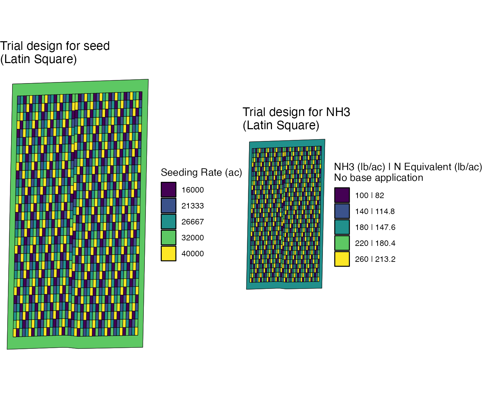
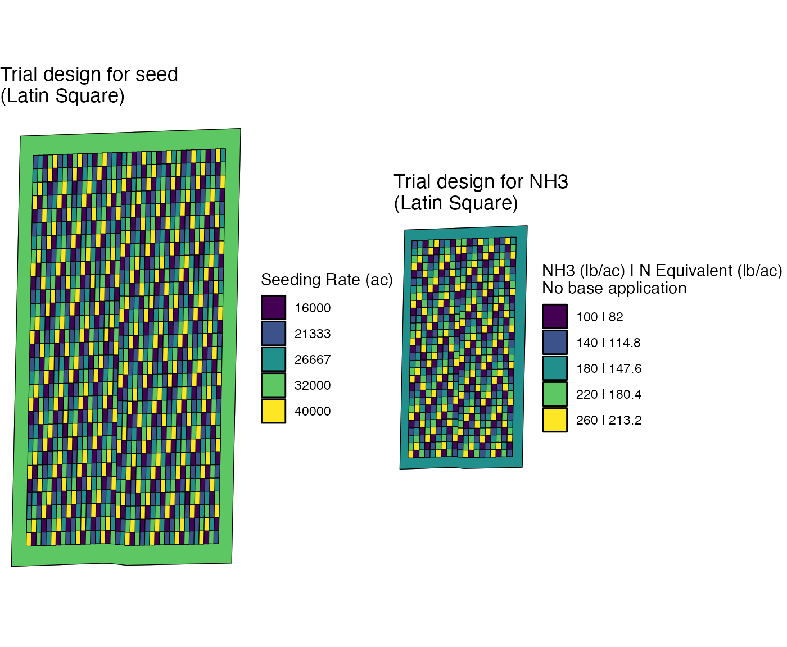
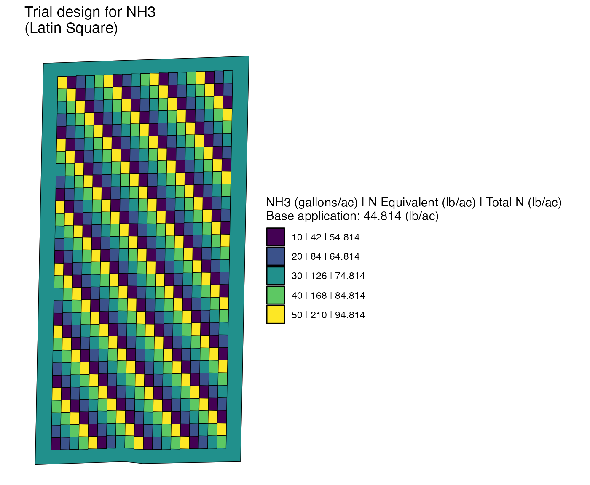
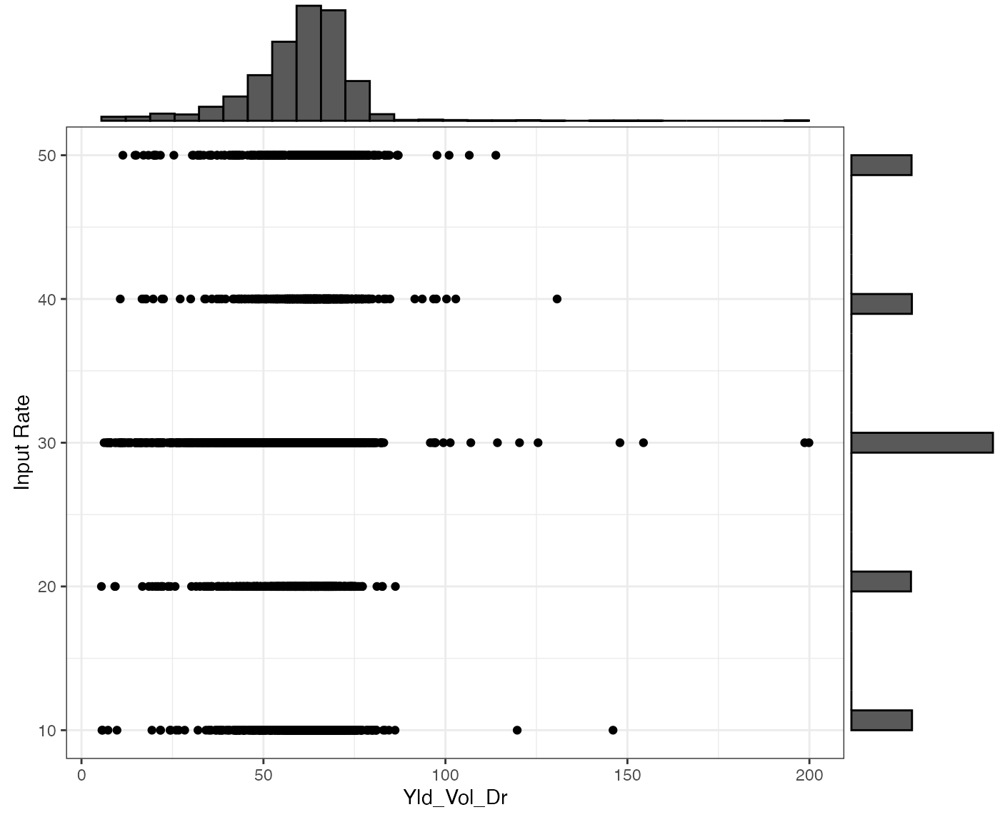

Diagnose Trial Designs
V4-diagnose-td.Rmd
#--- pacakges ---#
library(ofpetrial)
library(terra)
#> terra 1.6.17
library(ggplot2)
#--- file names ---#
boundary_file <- system.file("extdata", "boundary-simple1.shp", package = "ofpetrial")
abline_file <- system.file("extdata", "ab-line-simple1.shp", package = "ofpetrial")Check the alignment of the harvester and applicator/planter
It is ideal for each of the yield data points to be associated with a
single input rate. However, this cannot be achieved sometimes because
the width of a machine is not a multiple of that of the other machines.
In such a case, you will have a mixed treatment problem where some data
points are associated with more than one input rates. The
check_alignment() function checks the alignment of
harvester and applicator/planter to quantify and visualize the degree of
mixed treatment problems of a trial design.
Let’s first create experiment plots where plot width is specified as 90 feet, which is twice as wide as the applicator of the nitrogen fertilizer and three times as wide as the harvesters.
n_plot_info <-
prep_plot_f(
input_name = "NH3",
machine_width = 45,
section_num = 1,
harvester_width = 30,
plot_width = 90
)
#>
exp_data <-
make_exp_plots(
input_plot_info = n_plot_info,
boundary_data = boundary_file,
abline_data = abline_file,
abline_type = "free"
)
#> Linking to GEOS 3.11.0, GDAL 3.5.3, PROJ 9.1.0; sf_use_s2() is TRUERunning check_alignment() to exp_data,
(
machine_alignment_check <- check_alignment(exp_data)
)
#> # A tibble: 1 × 6
#> input_name harvest_ab_line overl…¹ harve…² g_pat…³ g_ove…⁴
#> <chr> <LINESTRING [m]> <list> <list> <list> <list>
#> 1 NH3 (353001.2 4331404, 353012.7 433204… <dt> <sf> <gg> <gg>
#> # … with abbreviated variable names ¹overlap_data, ²harvester_path,
#> # ³g_path_alignment, ⁴g_overlapOne of the elements of the resulting output is
g_path_alignment, which is a ggplot figure of
the path of the harvester (red) and applicator (blue).
machine_alignment_check$g_path_alignment
#> [[1]]As you can see, three yield paths fit perfectly in a single
applicator path. That is, there is not mixed treatment problme in this
layout of experiment plots. The g_overlap element is a
ggplot figure of the histogram of the highest percentage of
the harvester strip area occupied by a single rate. In this trial
design, since all the strips have only a single input rate, all 45
strips have value of 100%.
machine_alignment_check$g_overlap
#> [[1]]
#> `stat_bin()` using `bins = 30`. Pick better value with `binwidth`.
#> Warning: Removed 1 rows containing missing values (`geom_bar()`).
Now, let’s make the plot width 45 feet.
n_plot_info <-
prep_plot_f(
input_name = "NH3",
machine_width = 45,
section_num = 1,
harvester_width = 30,
plot_width = 45
)
#> For NH3, the plot width you specified would cause mixed treatment problems. However, there is a plot width that avoids them. It is suggested that you use 90 as the plot width.
exp_data <-
make_exp_plots(
input_plot_info = n_plot_info,
boundary_data = boundary_file,
abline_data = abline_file,
abline_type = "free"
)
#--- check alignment ---#
machine_alignment_check <- check_alignment(exp_data)As you can see below, every three harvester paths is associated with two input rates.
machine_alignment_check$g_path_alignment
#> [[1]]This can be confirmed with the following figure, which shows that a third of harvester strips have 50% mix.
machine_alignment_check$g_overlap
#> [[1]]
#> `stat_bin()` using `bins = 30`. Pick better value with `binwidth`.
#> Warning: Removed 1 rows containing missing values (`geom_bar()`).
If you see this kind of problem, reconsider changing the plot width,
unless it is not avoidable. If you are not sure what the right plot
width is, it might be advisable to leave plot_width
unspecified (plot_width = NA) in a
prep_plot_*() function, in which case, the package will
automally suggest an appropriate (may not be optimal) plot width.
Check the correlation of the input rates for a two-input experiment
Suppose you are running a two-input experiment. High correlation
between the two input rates should be avoided as it will hurt
statistical efficiency, rendering the estimation of the individual
impact of the two inputs inaccurate. The available pre-made trial design
options the ofpetrial packge are designed to avoid this
problem. However, when you assign rates yourself using the
rank_seq_ws and rank_seq_as options for the
ls design type, you may accidentally create trial design
where the two input rates are highly correlated. Here is an example.
We first create experiment plots. Note that the
plot_width of both inputs are the same.
seed_plot_info <-
prep_plot_f(
input_name = "seed",
machine_width = 60,
section_num = 24,
harvester_width = 30,
plot_width = 30
)
#>
n_plot_info <-
prep_plot_f(
input_name = "NH3",
machine_width = 30,
section_num = 1,
harvester_width = 30,
plot_width = 30
)
#>
exp_data <-
make_exp_plots(
input_plot_info = list(seed_plot_info, n_plot_info),
boundary_data = boundary_file,
abline_data = abline_file,
abline_type = "free"
)Now, we assign rates for both inputs using the same
rank_seq_ws and rank_seq_as.
seed_rate_info <-
prep_rate(
plot_info = seed_plot_info,
gc_rate = 32000,
unit = "seed",
min_rate = 16000,
max_rate = 40000,
num_rates = 5,
design_type = "ls",
rank_seq_ws = c(5, 4, 3, 2, 1),
rank_seq_as = c(5, 1, 4, 2, 3)
)
#> Trial rates were not directly specified via the {rates} option, so the trial rates will be calculated using min_rate, max_rate, gc_rate, and num_rates
n_rate_info <-
prep_rate(
plot_info = n_plot_info,
gc_rate = 180,
unit = "lb",
rates = c(100, 140, 180, 220, 260),
design_type = "ls",
rank_seq_ws = c(5, 4, 3, 2, 1),
rank_seq_as = c(5, 1, 4, 2, 3)
)
td_two_input <- assign_rates(exp_data, rate_info = list(seed_rate_info, n_rate_info))
#> Trial rates were not directly specified, so the trial rates were calculated using min_rate, max_rate, gc_rate, and num_ratesHere is the visualization of the assigned rates for both inputs. It
is easy to see that both input have exactly the same pattern because of
the same rank_seq_ws and plot_width.
viz(td_two_input, abline = FALSE)
You can check the correlation of the two inputs using
check_ortho_inputs() like this.
check_ortho_inputs(td_two_input)
#> Checking the correlation between the two inputs. This may take some time depending on the number of experiment plots.
#> [1] 0.9958792As you can see, they are extremely highly correlated. When you see this, you should reassign rates for one of the inputs.
Now, let’s change the width of the plots for NH3 to 60 feet, which is twice as wide as that for seed. We then use the same rate information to assign rates to the new experiment plots.
#++++++++++++++++++++++++++++++++++++
#+ change the plot width for NH3
#++++++++++++++++++++++++++++++++++++
n_plot_info <-
prep_plot_f(
input_name = "NH3",
machine_width = 60,
section_num = 1,
harvester_width = 30,
plot_width = 60
)
#>
#++++++++++++++++++++++++++++++++++++
#+ Recreate experient plots for NH3
#++++++++++++++++++++++++++++++++++++
exp_data <-
make_exp_plots(
input_plot_info = list(seed_plot_info, n_plot_info),
boundary_data = boundary_file,
abline_data = abline_file,
abline_type = "free"
)
#++++++++++++++++++++++++++++++++++++
#+ Assign rates again with the same rate information
#++++++++++++++++++++++++++++++++++++
td_two_input_2 <- assign_rates(exp_data, rate_info = list(seed_rate_info, n_rate_info))
#> Trial rates were not directly specified, so the trial rates were calculated using min_rate, max_rate, gc_rate, and num_rates
viz(td_two_input_2, abline = FALSE)
Now, there are two plots of different rates of seed in a single plot of NH3. Consequently, their correlation is very low now.
check_ortho_inputs(td_two_input_2)
#> Checking the correlation between the two inputs. This may take some time depending on the number of experiment plots.
#> [1] 0.06639064Now, let’s think about a case where the randomized block design is used for both inputs1 We are using the same plot width for both inputs just like the first case.
n_plot_info <-
prep_plot_f(
input_name = "NH3",
machine_width = 30,
section_num = 1,
harvester_width = 30,
plot_width = 30
)
#>
exp_data <-
make_exp_plots(
input_plot_info = list(seed_plot_info, n_plot_info),
boundary_data = boundary_file,
abline_data = abline_file,
abline_type = "free"
)Now, we assign rates for both inputs using the randomized block
design (rb). Since rates are randomly assigned by block for
both inputs, some cases introduce a higher correlation than others.
seed_rate_info <-
prep_rate(
plot_info = seed_plot_info,
gc_rate = 32000,
unit = "seed",
min_rate = 16000,
max_rate = 40000,
num_rates = 5,
design_type = "rb"
)
#> Trial rates were not directly specified via the {rates} option, so the trial rates will be calculated using min_rate, max_rate, gc_rate, and num_rates
n_rate_info <-
prep_rate(
plot_info = n_plot_info,
gc_rate = 180,
unit = "lb",
rates = c(100, 140, 180, 220, 260),
design_type = "rb"
)The first case has a correlation of -0.1049839, while the second case is 0.0240804.
#--- case 1 ---#
set.seed(543)
td_two_input_rb_1 <- assign_rates(exp_data, rate_info = list(seed_rate_info, n_rate_info))
cor_case_1 <- check_ortho_inputs(td_two_input_rb_1)
cor_case_1
#> [1] -0.1049839
#--- case 2 ---#
set.seed(383543)
td_two_input_rb_2 <- assign_rates(exp_data, rate_info = list(seed_rate_info, n_rate_info))
cor_case_2 <- check_ortho_inputs(td_two_input_rb_2)
cor_case_2
#> [1] 0.0240804Check the correlation of the input rates with observed field/topographic characteristics
When analyzing the experiment data and applying statistical methods
to estimate yield response functions, field and topographic
characteristics are often included in the model to control for their
effects, which help isolate the impact of the input on yield. In
designing experiments, it would be nice to have the input rates
uncorrelated (orthogonal to) with those observed characteristics. The
check_ortho_with_chars() checks this.
Let’s first import an already-design trial design called
td_single_input.
data(td_single_input)Here is the visualization of the trial desing.
viz(td_single_input, abline = FALSE)
Here, we have three sets of spatial data we want to check.
- Past yield data (
Yld_Vol_Dr) from the same field (points data) - SSURGO data (polygons data)
- clay content (
clay) - soil category (
mukey)
- clay content (
- Slope (
slope) of the field (raster data) - Topographic Wetness Index (
twi) of the field (raster data)
Yield data
yield_sf <- sf::st_read(system.file("extdata", "yield-simple1.shp", package = "ofpetrial"))
#> Reading layer `yield-simple1' from data source
#> `/private/var/folders/t4/5gnqprbn38nftyxkyk5hdwmd8hnypy/T/RtmpO9VLgR/temp_libpathdea715c37044/ofpetrial/extdata/yield-simple1.shp'
#> using driver `ESRI Shapefile'
#> Simple feature collection with 16822 features and 34 fields
#> Geometry type: POINT
#> Dimension: XY
#> Bounding box: xmin: -16.70075 ymin: 39.11962 xmax: -16.69612 ymax: 39.1269
#> Geodetic CRS: WGS 84
ggplot(yield_sf) +
geom_sf(aes(color = Yld_Vol_Dr)) +
scale_color_viridis_c() +
theme_void()
SSURGO
ssurgo_sf <-
sf::st_read(system.file("extdata", "ssurgo-simple1.shp", package = "ofpetrial")) %>%
dplyr::mutate(mukey = factor(mukey))
#> Reading layer `ssurgo-simple1' from data source
#> `/private/var/folders/t4/5gnqprbn38nftyxkyk5hdwmd8hnypy/T/RtmpO9VLgR/temp_libpathdea715c37044/ofpetrial/extdata/ssurgo-simple1.shp'
#> using driver `ESRI Shapefile'
#> Simple feature collection with 11 features and 9 fields
#> Geometry type: POLYGON
#> Dimension: XY
#> Bounding box: xmin: -16.70096 ymin: 39.11957 xmax: -16.69587 ymax: 39.12696
#> Geodetic CRS: WGS 84
ggplot(ssurgo_sf) +
geom_sf(aes(fill = mukey)) +
theme_void()
ggplot(ssurgo_sf) +
geom_sf(aes(fill = clay)) +
scale_fill_viridis_c() +
theme_void()
Slope and TWI
topo_rast <-
c(
terra::rast(system.file("extdata", "slope.tif", package = "ofpetrial")),
terra::rast(system.file("extdata", "twi.tif", package = "ofpetrial"))
)
plot(topo_rast)
checks <-
check_ortho_with_chars(
td = td_single_input,
sp_data_list = list(yield_sf, ssurgo_sf, topo_rast),
vars_list = list("Yld_Vol_Dr", c("mukey", "clay"), names(topo_rast))
)
#> Warning: Computation failed in `stat_bin()`
#> Caused by error in `abs()`:
#> ! non-numeric argument to mathematical function
checks$summary_data[[1]]
#> var cor_with_rate
#> 1 Yld_Vol_Dr 0.01821775
checks$summary_fig[[1]]we do not recommend using the randomized block design. see add citation.↩︎